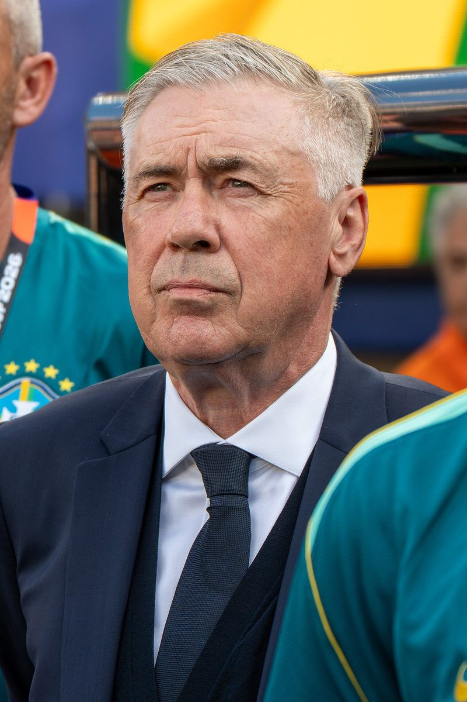

Japan Beat Brazil 3-2 in Singapore With a Stoppage-Time Winner
Tatsuhiro Sakamoto scored in the 91st minute after a Vinicius Junior double had brought Brazil level; Carlo Ancelotti and Raphinha were sent off.

What happened
Japan beat Brazil 3-2 in an international friendly in Singapore on Saturday 14 November 2026. Tatsuhiro Sakamoto scored the winner in the first minute of stoppage time, after Brazil had come back from two goals down.
Japan led 2-0 inside 20 minutes. Takefusa Kubo opened the scoring in the 15th minute with a low shot from the halfway line that beat goalkeeper Pedro Morisco, the Associated Press reported. Keito Nakamura added the second about four minutes later from a Shuto Nakano cross.

Vinicius Junior brought Brazil back. Shortly after the half-hour he shot into the top corner from a Bruno Guimaraes pass. With 15 minutes left he equalised from long range: the ball hit the inside of one post, then the other, and crossed the line. Endrick also hit the crossbar for Brazil.
In the 91st minute Japan won the ball back and Sakamoto finished from close range.
The red cards
Brazil's players and bench protested that Bruno Guimaraes had been fouled before the winning goal. Coach Carlo Ancelotti was sent off, and so was captain Raphinha, who had already been substituted and was on the sideline.

Why it matters
The match was a rematch of the 2026 World Cup round of 32 in June, which Brazil won 2-1 with a late comeback, NBC Sports reported. According to the AP, this is Japan's second win over Brazil in 13 months and their first away from home soil. Their first win over Brazil came in Tokyo in October 2025, also 3-2.
NBC Sports wrote that the defeat adds pressure on Ancelotti after Brazil's World Cup.
Key facts
- Score: Japan 3-2 Brazil.
- Japan goals: Kubo 15', Nakamura, Sakamoto 90+1'.
- Brazil goals: Vinicius Junior (two).
- Sent off: Carlo Ancelotti (coach) and Raphinha, both after the final goal.
- Coaches: Hajime Moriyasu (Japan), Carlo Ancelotti (Brazil).